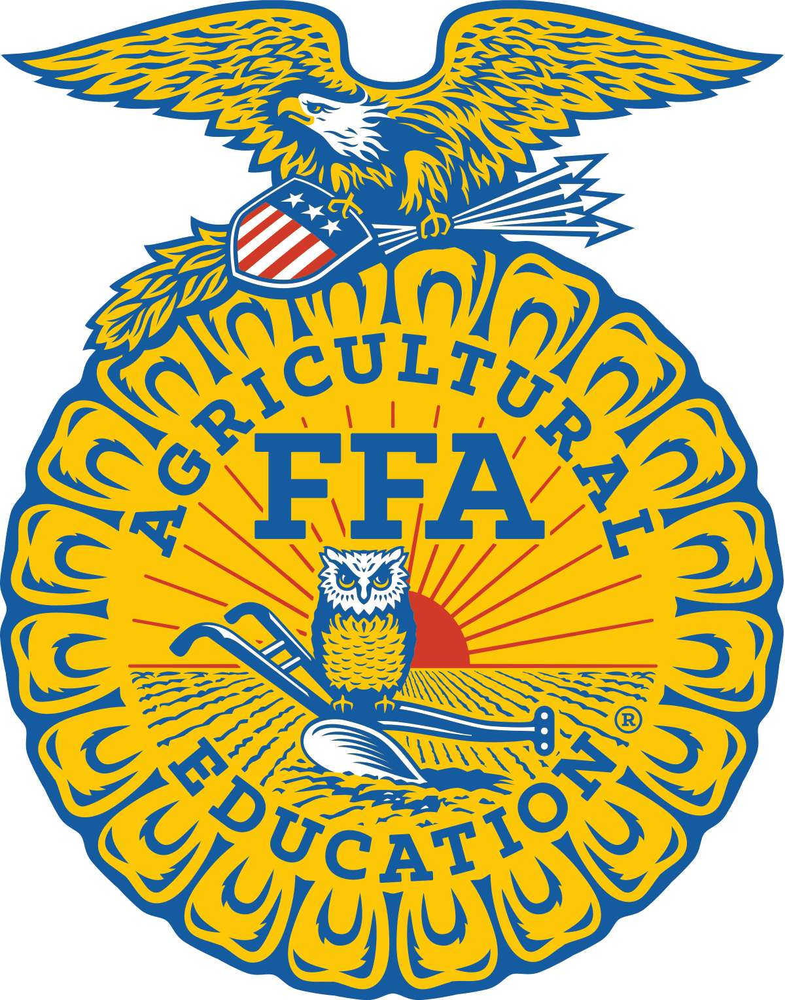

FFA

There are more than three-hundred distinct careers in the agriculture, food and natural resources industries. Agricultural Education and the National FFA
Organization work in tandem to connect our members to those career opportunities through the Three Circle Model of Ag Education. Our model combines the
strengths of classroom education, work-based experiential learning and career preparation and leadership through FFA.
Every FFA member’s journey is rooted in an agricultural education classroom. They are encouraged to apply what they learn in the classroom in a work or
research-based Supervised Agricultural Experience (SAE). As they progress, they have opportunities to test their skills and knowledge against other members
locally, at the state level and at the National FFA Convention & Expo.
As a student-led organization, members have opportunities throughout their FFA experience to develop leadership skills. They can become chapter officers,
section or region officers, state officers and perhaps even a National FFA Officer. National FFA provides leadership training for members at all levels.
Our vision is to Grow the next generation of leaders who will change the world. And we realize that vision by executing on our mission to make a positive
difference in the lives of students by developing their potential for premier leadership, personal growth and career success.